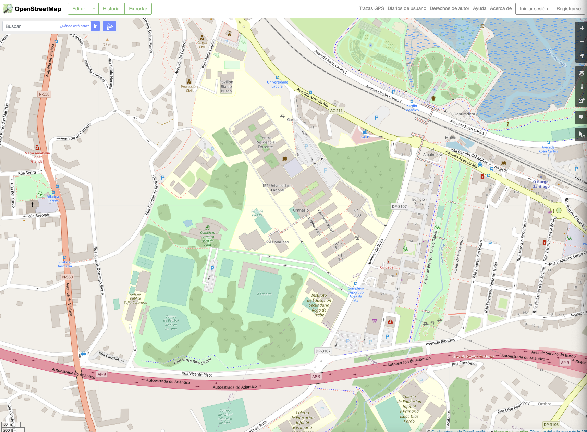
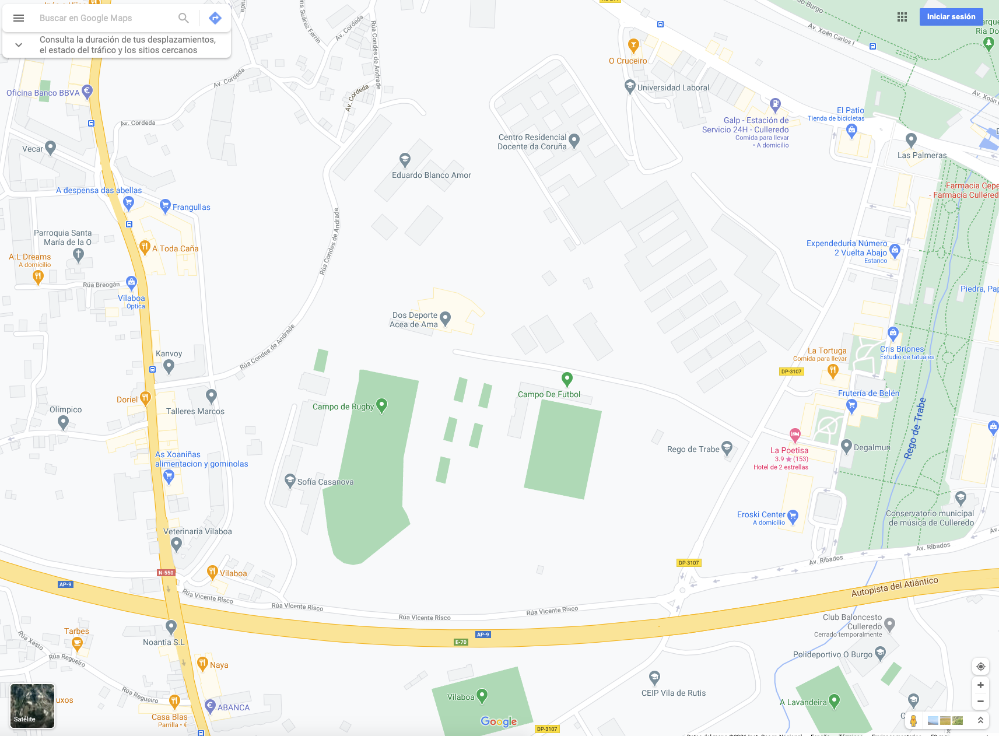

OSM no es un mapa, es una base de datos
Open Database License
- Licencia de OSM desde septiembre 2012,
antes CC-BY-SA -
En resumen:
- Puedes: compartir, crear, adaptar
- Siempre que: atribución, compartir-igual, siempre abierto
Números
A 25 de Febrero de 2021:
- ~7,5M usuarios
- ~8.500M puntos GPS
- ~6.700M nodos
- ~745M líneas
- ~8,7M relaciones
- Fuente


//
HOT
Humanitarian OpenStreetMap Team
- Se organiza a partir del terremoto de Haití
- Se realizan trabajos de formación en zonas necesitadas
- La mayor parte del trabajo es remoto
- Actualmente trabajando en Nepal, Malawi, Indonesia, Nigeria, ...

Kibera (Nairobi), Kenia
Licencia
Introducción a OpenStreetMap by Pablo Sanxiao and Micho García is licensed under a Creative Commons Attribution-ShareAlike 4.0 International License.
Algunas diapositivas han sido tomadas de la presentación "OSM no es un mapa, es una base de datos" de Jorge Sanz